\[ \require{physics}
\require{mhchem}
\]
材料強度学
第一講
Hooke’s Law
\[ \pdv{\sigma}{\epsilon} = E \]
応力は歪の小さい範囲では歪に比例する。比例係数はヤング率。当たり前の話。
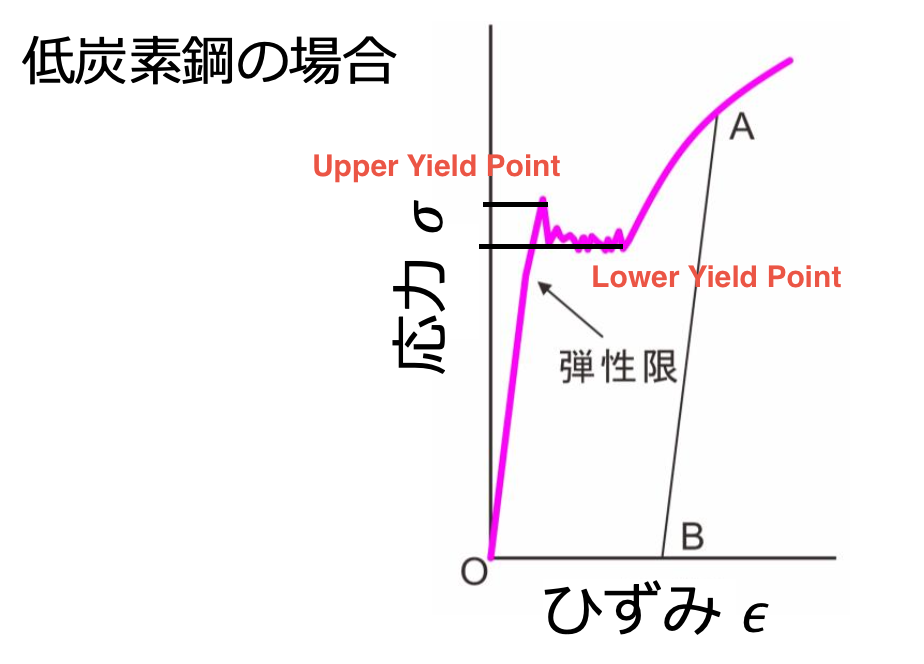
点Aから手を離すと、フックの直線とそんなに変わらない傾きで点Bに行く。OBのことを塑性変形と読んでいる。このことを yield phenomenon pointと呼んでいるらしい。
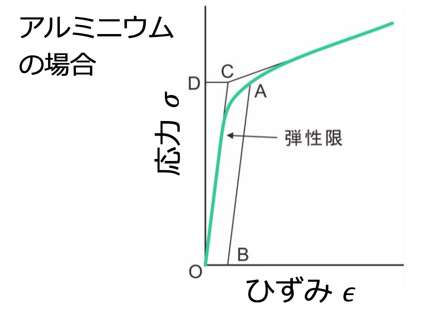
この状態は continuous yieldingと呼ばれている。このヤング率は測定が難しいので、歪の0.2%とすることが多いらしい。
脆性破壊と延性破壊
脆性破壊は、急激に破壊が進むこと。延性破壊は、ゆっくりと破壊が進むこと。
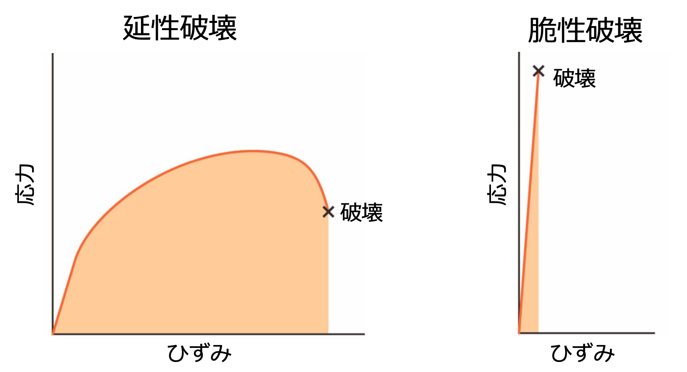
靱性は、破壊エネルギーのこと。延性破壊が起こる材料は靱性が高い。
\[ \text{靱性} = \int \sigma \dd \epsilon \]
理想強度
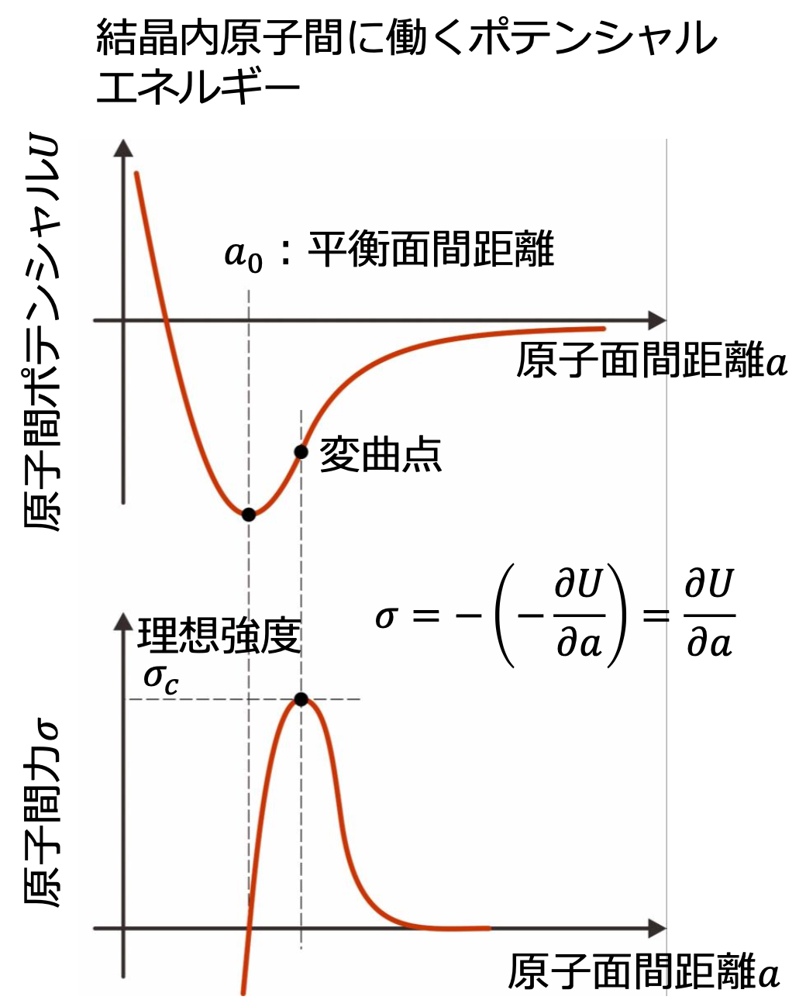
このもっこりを正弦関数で近似して、
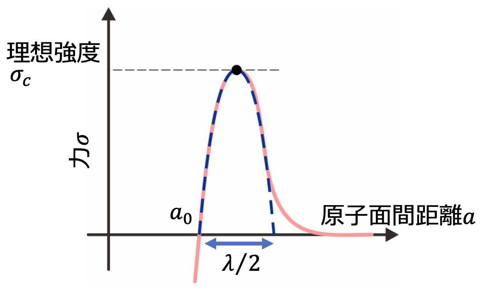
\[ \sigma \cong \sigma_c \sin \left(\frac{2\pi(a-a_0)}{\lambda}\right) \]
ここで、一時近似すると、
\[ \sigma \cong \sigma_c \frac{2\pi(a-a_0)}{\lambda} \]
フックの法則では
\[ \sigma = E \epsilon = E \frac{a-a_0}{a_0}\]
\[ \sigma_c = \frac{E\lambda}{2\pi a_0}\]
ここで \(\lambda\) を求めないといけないが、これは、実験的に劈開試験を行うことで求めることができる。表面エネルギーを \(\gamma\) にすると、面が二つある事を考えて、
\[ 2\gamma = \int_{a_0}^{\infty} \sigma \dd a = \int_{a_0}^{\infty} \sigma_c \sin \left(\frac{2\pi(a-a_0)}{\lambda}\right) \dd a = \sigma_c \frac{\lambda}{\pi} \]
ここで注意なのは、もっこりは一つなので、それで近似する。
ここにフックの法則の方の式を代入すると、
\[ 2\gamma = \frac{\sigma_c}{\pi} \frac{2\pi a_0 \sigma_c}{E} = \frac{2\sigma_c^2 a_0}{E} \]
\[ \sigma_c = \sqrt{\frac{\gamma E}{a_0}} \]
実際の破壊強度は \(\sigma_c\) の 10%~1%程度で あることが知られている。このモデルでは欠陥の影響が考慮されていない。現実の材料では、ミリ～ミクロンサイズの空隙から、熱力学的平衡状態において存在する格子欠陥まで、さまざまな欠陥が含まれており、それゆえ破壊強度が理想強度を大きく下回ると考えられる。
第２講
滑り面と滑り方向、滑り系について
これらを表すのにミラー指数が使われる。
滑り面 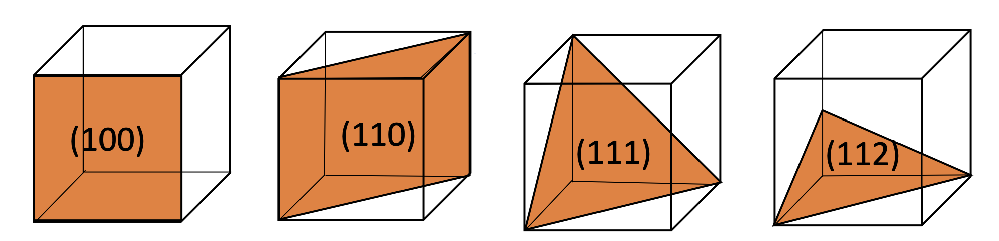
\[
(h\; k\; l) = (\frac{1}{x_1} \; \frac{1}{y_1} \; \frac{1}{z_1})
\] のように定義するので、このようになる。要するに、逆数を考えればいい。また面同士の角度は、内積を取ることで求めることができる。 \[
\cos \phi = \frac{h_1h_2 + k_1k_2 + l_1l_2}{\sqrt{h_1^2 + k_1^2 + l_1^2} \sqrt{h_2^2 + k_2^2 + l_2^2}}
\] また、面のことは \((h\; k\; l)\) と表し、等価な面は \({h\; k\; l}\) と表す。
滑り方向 方向については単純に方向のベクトルを考えればいい。
滑り系 先ほどの二つの値をかけあわせてできるもの。
第３講
理論剪断強度
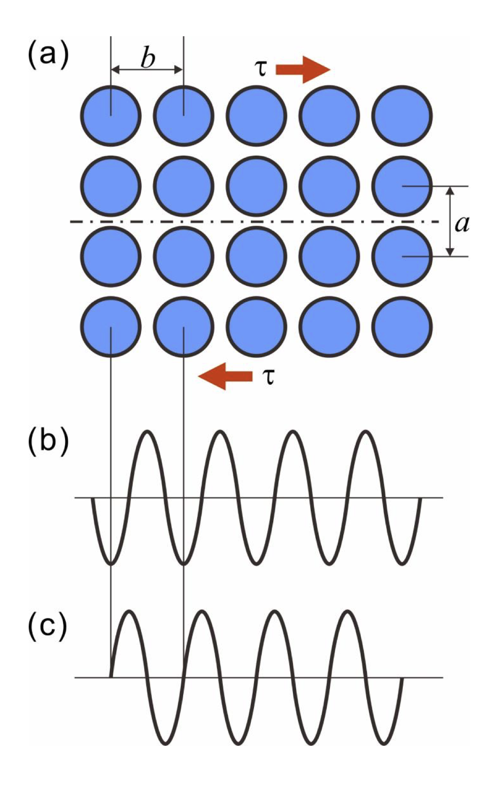
このような近似で、臨界剪断応力は次のように示される。
\[
\tau = \tau_{max} \sin \frac{2\pi x}{b} \approx \frac{2\pi x \tau_{max}}{b}
\]
これに対して、フックの法則から
\[
\tau = G \frac{x}{a}
\]
\[
\tau_{max} = \frac{Gb}{2\pi a}
\]
ここで、\(\tau_{max}\) は理論剪断強度と呼ばれる。
\[
\tau = \frac{Gb}{2\pi a} \sin \frac{2\pi x}{b}
\]
となる。
過去問
2008
問1
刃状転位およびらせん転位を図示して、転位線とそのバーガースベクトルの関係について記せ
Dislocations
Dislocations are a type of defect in a crystal structure. They are areas where the atoms are out of position in the crystal structure. Dislocations are divided into two basic types: edge dislocations and screw dislocations.
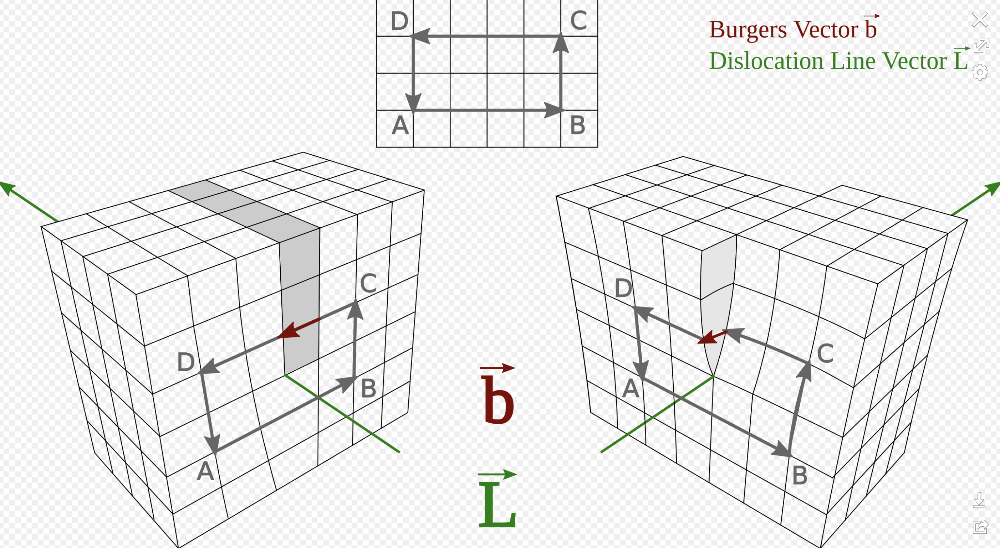
Edge Dislocations
Edge dislocations are caused by the termination of a plane of atoms in the middle of a crystal. In such a case, an extra half-plane of atoms is introduced.
The vector that is perpendicular to the dislocation line and points in the direction where the extra half-plane of atoms was inserted is called the Burgers vector.
Screw Dislocations
Screw dislocations are a bit more difficult to visualize. They are formed by a shear stress that is applied to the crystal structure.
The Burgers vector is parallel to the dislocation line for a screw dislocation.
In both types of dislocations, the magnitude of the Burgers vector is equal to the lattice parameter, \(a\) .
解答
螺旋転移では、転位線とバーガースベクトルは平行である。一方、刃状転位では、転位線とバーガースベクトルは直交する。
問２
断面積 \(S\) の単結晶の丸棒に引っ張り力 \(F\) を負荷した場合を考える。この時、引っ張り方向と滑り面の方線のなす角度を \(\phi\) 引っ張り方向と滑り方向のなす角度を \(\lambda\) とした場合、臨界剪断応力 \(\tau_0\) を \(S,F,\phi,\lambda\) の関数として導け。またシュミット因子についてのべよ。
解答
Critical Shear Stress and Schmid’s Law
When a single crystal rod with a cross-sectional area \(S\) is subjected to a tensile force \(F\) , the critical resolved shear stress \(\tau_0\) is given by Schmid’s Law:
\[\tau_0 = \frac{F}{S} \cdot \cos(\phi) \cdot \cos(\lambda)\]
where \(\phi\) is the angle between the tensile direction and the normal to the slip plane, and \(\lambda\) is the angle between the tensile direction and the slip direction.
The term \(\cos(\phi) \cdot \cos(\lambda)\) is known as the Schmid factor. It represents the resolved shear stress on a particular slip system. The slip system with the highest Schmid factor will be the first to undergo plastic deformation when the material is subjected to a stress. The Schmid factor is a measure of the component of the applied stress that can contribute to dislocation motion along a slip plane in a specific direction.
問３
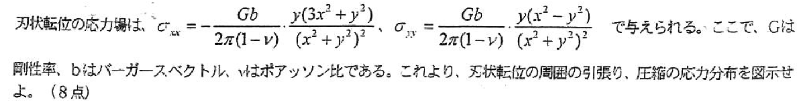
刃状転位の応力場は \(\sigma_{xx} = -\frac{Gb}{2\pi(1-\nu)}\frac{y(3x^2+y^2)}{(x^2+y^2)^2}, \sigma_{yy} = \frac{Gb}{2\pi(1-\nu)}\frac{(x^2-y^2)}{(x^2+y^2)^2}\) で与えられる。ここで、\(G\) はせん断弾性率、\(b\) はバーガースベクトル、\(\nu\) はポアソン比である。これより刃状転位周囲の引っ張り、圧縮の応力分布を図示せよ。
コードはこちら
import numpy as npimport matplotlib.pyplot as plt# Constants = 1 # Shear modulus = 1 # Burgers vector = 0.3 # Poisson's ratio # Grid of x, y points = np.linspace(- 1 , 1 , 100 )= np.linspace(- 1 , 1 , 100 )= np.meshgrid(x, y)# Stress fields = - G* b/ (2 * np.pi* (1 - nu)) * Y* (3 * X** 2 + Y** 2 ) / (X** 2 + Y** 2 )** 2 = G* b/ (2 * np.pi* (1 - nu)) * (X** 2 - Y** 2 ) / (X** 2 + Y** 2 )** 2 # Plot = plt.subplots(1 , 2 , figsize= (12 , 6 ))# sigma_xx = ax[0 ].contourf(X, Y, sigma_xx, levels= 20 , cmap= 'RdBu_r' )= ax[0 ])0 ].set_title('$ \ sigma_ {xx} $' )# sigma_yy = ax[1 ].contourf(X, Y, sigma_yy, levels= 20 , cmap= 'RdBu_r' )= ax[1 ])1 ].set_title('$ \ sigma_ {yy} $' )
<>:24: SyntaxWarning: invalid escape sequence '\s'
<>:29: SyntaxWarning: invalid escape sequence '\s'
<>:24: SyntaxWarning: invalid escape sequence '\s'
<>:29: SyntaxWarning: invalid escape sequence '\s'
/var/folders/sp/v7dq4s5n03scr606k81g7tqw0000gn/T/ipykernel_48227/1480925135.py:24: SyntaxWarning: invalid escape sequence '\s'
ax[0].set_title('$\sigma_{xx}$')
/var/folders/sp/v7dq4s5n03scr606k81g7tqw0000gn/T/ipykernel_48227/1480925135.py:29: SyntaxWarning: invalid escape sequence '\s'
ax[1].set_title('$\sigma_{yy}$')
問４
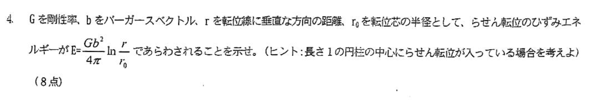
ひずみエネルギーは半径\(r\) の場所で円筒一周で剪断応力が
\[
\tau = \frac{Gb}{2\pi r} = G\gamma
\]
なので、面積あたりのひずみエネルギーは
\[
e = \int_{0}^{\gamma} \tau \dd \gamma = \frac{1}{2}G\gamma^2
\]
これは、歪が線形に変化するときのひずみエネルギーと一致する。
\[
E = \int_{r_0}^{r} e2\pi r \dd r = \frac{Gb^3}{4\pi}\ln \frac{r}{r_0}
\]
問６
表面エネルギーは、劈開にかかった仕事の合計なので、正弦近似によって、
\[
2\gamma_s = \int^{\lambda/2}_{0} \sigma_c \sin \frac{2\pi x}{\lambda} \dd x = \frac{2\sigma_c^2 a_0}{E}
\]
次に、正弦近似とフックの法則を用いて、
\[
\sigma = \sigma_c \sin \frac{2\pi x}{\lambda} = G \frac{x}{a_0}
\]
これらを合わせて波長を消せば
\[
\sigma_c = \sqrt{\frac{\gamma_s E}{a_0}}
\]
問７
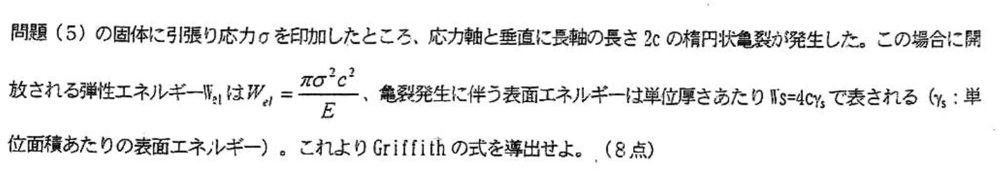
\[
\Delta W = -W_{sl} + W_s
\]
で、臨界成長条件は
\[
\dv{\Delta W}{c} = 0
\]
これを解いてやると、
\[
\sigma_c = \sqrt{\frac{2\gamma_s E}{\pi c}}
\]
問９
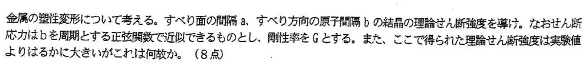
剪断応力を正弦近似すると、
\[
\tau = \sigma_c \sin \frac{2\pi x}{b}
\]
ここで、フックの法則から
\[
\tau = G \frac{x}{a}
\]
これら二つの式から、
\[
\sigma_c = \frac{Gb}{2\pi a}
\]
これが実験値と大きく違うのは、実際には、原子が一気にすべるのではなく、転位(dislocation)を介して順番にすべっているから
問１０
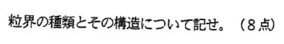
2つの結晶粒の相対方位関係により粒界が分類される。相対方位が15度以下の粒界を低角粒界（Low-angle grain boundary, LAGB）、15度以上の粒界を高角粒界（High-angle grain boundary)と呼ぶ。低角粒界は周期的に配列した転位列として記述できる（Read-Shockleyの関係[1]）。相対角度の増加と共に転位の間隔が小さくなり、最終的に転位同士が重なってしまう。高角粒界では、転位が重なるため、転位列としての記述はできない。高角粒界は低角粒界と比べ構造乱れが大きい。以前は、高角粒界は非晶質に似た構造だと考えられていたが、電子顕微鏡観察により、規則的な原子構造を持つことが明らかとなっている。